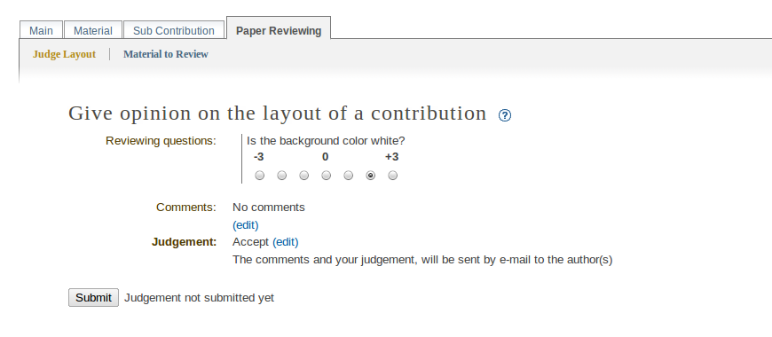
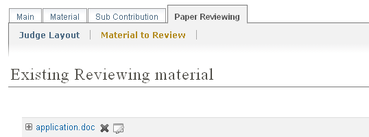

4.1. Paper reviewing module - layout reviewer’s guide¶
4.1.1. Getting started¶
As a layout reviewer, your responsibility is to judge the layout of all of the papers are assigned to you. Firstly, you must log in to the system and you will find a link in the left menu under Paper Reviewing, called Layouit Reviewer Area.

4.1.2. Layout reviewer area¶
When you access the layout reviewers area you will find a list of all the contributions that are assigned to you for judgement. You also see the state of every contribution.
First you should fill in the questions provided by the paper review manager, after this, you can give your judgement for the layout of the contribution: to be corrected, rejected, accepted. The comments that you write should help the referee to give his judgement. The authors of the contribution will receive an automatic e-mail notification containing your comments and judgement, if the managers of the paper reviewing set this option.
The material which is the subject of reviewing is accessible under Material to Review.
